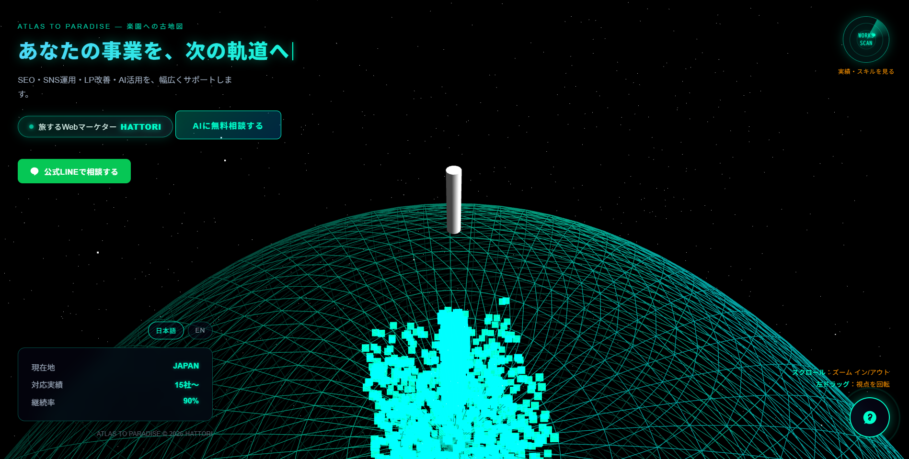
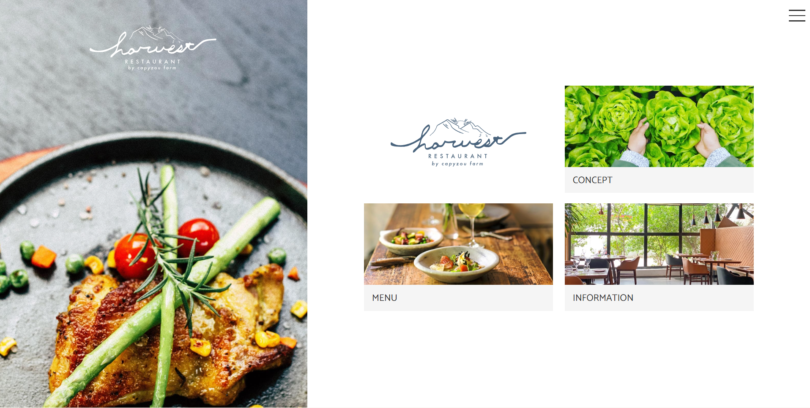
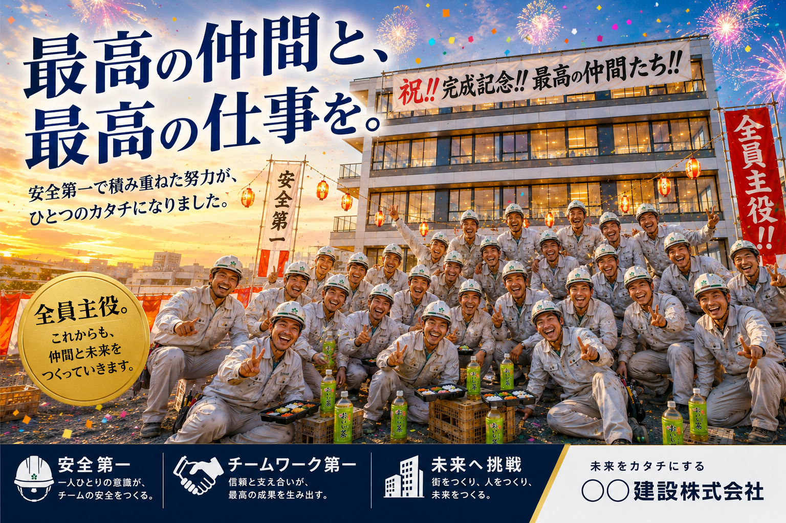
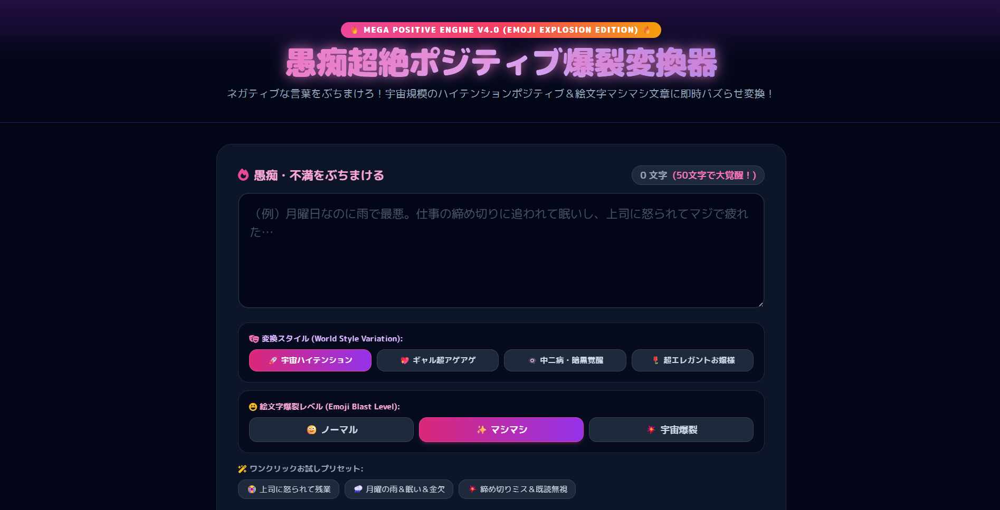
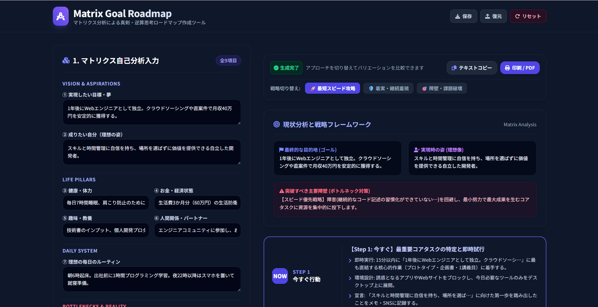

実績・制作事例

ATLAS TO PARADISE トップページ — 3D AIナビゲーター
Three.jsで構築したフルスクリーン3Dロケット演出。打ち上げ→大気圏離脱→地球周回まで、パーティクル(炎・煙・宇宙塵)と流れ星をリアルタイム物理でアニメーション。多言語AIチャット窓口とGoogleログインゲート、訪問者自身のAPIキーによる直接接続を統合した、最新3D×AIの統合フロントエンド。 詳細を見る (３ｄ.html)
書道スクロールサイト
Python画像処理(scikit-image, OpenCV, NetworkX)で実際の墨の中心線を出し、正しい筆順でSVGアニメーションとして再現した書道スクロールサイト。 詳細を見る (書道.html)
Wandering Ledger — バンライフ 会計士の冒険記 ※主人公は架空の人物です
ダークパレット×アンバーアクセントのバンライフ物語マガジンサイト。モーフィングするヒーローテキストと、複数エピソードの交互レイアウトで構成。 詳細を見る (van.html)
Taichung Travel Prototype
台湾の観光地・グルメ・文化の魅力を伝える、台湾観光PR向けのWebサイト。モーダル表示・レスポンシブ対応を備えたビジュアル訴求型のページ構成で、旅行意欲を喚起するデザインに仕上げました。 詳細を見る (taiwan.html)

リフォーム会社のご提案用サイト
住まいの刷新や改修事例を魅力的に伝えるリフォーム事業者向けのデザインプロトタイプ。見やすさと見積もり・相談導線を両立したレイアウト設計。 詳細を見る (リフォームご提案用)

レストランご提案用サイト
料理の世界観や店舗の雰囲気を伝える、飲食店向けのデザインプロトタイプ。メニューの閲覧性やオンライン予約へのスムーズな接続を意識した構成。 詳細を見る (レストランご提案用)

ブライダルご提案用サイト
エレガントかつ洗練された世界観で特別な一日をプロデュースする、ブライダル事業者向けWebデザイン。ビジュアル重視の構成と見学予約導線。 詳細を見る (ブライダルご提案用)

建設会社様向け 採用インパクトLP「現場まつり」
「現場は、文化祭だ。」をコンセプトに、大工・電気工・重機オペレーターなど職種ごとの魅力を祭り仕立てで見せる建設会社向け採用LP。信頼重視で堅くなりがちな業界に、楽しさ・明るさ・親しみやすさを前面に出した構成で、入社・応募への心理的ハードルを下げる設計。 詳細を見る (現場まつり)


あなたのアイデアを形に。— Webアプリ / PHPアプリ開発
企画から実装まで、Webアプリ・PHPアプリの開発に対応。Googleストア掲載を見据えた設計も可能です。以下は実際に公開している例です。 ネガポジ変換アプリ マトリクス思考ロードマップ生成アプリ